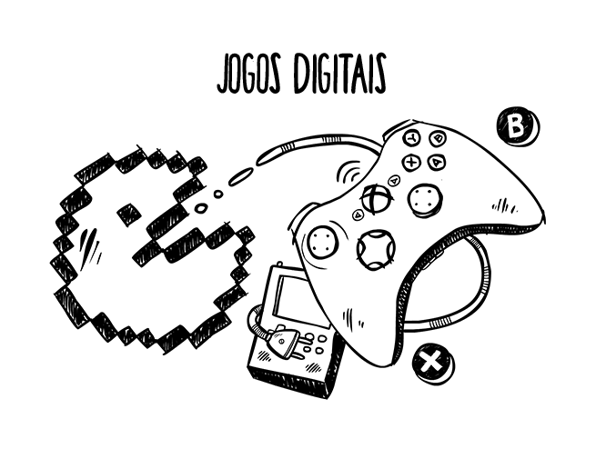

Curso completo de Jogos Digitais
ajude a dar vida na imaginação e coloque em pratica em sua criatividade

Por ser uma área nova de atuação, ainda gera dúvidas, mas as oportunidades no mercado de trabalho para quem possui a formação em Jogos Digitais são inúmeras como Artista Gráfico, Desenvolvedor, Game Designer, roteirista, produtor e entre outros A graduação de Jogos Digitais aborda as ferramentas práticas e teóricas para o aluno que escolher cursar ter a capacidade de projetar, implementar e testar jogos. Com a criação de personagens, ambientes, objetos, interfaces, é possível aprender sobre tudo o que é necessário para criar um jogo. Jogos Digitais ainda é uma graduação bem recente no Brasil mas com um grande mercado de trabalho já aberto e disponivel, principalmente no exterior.
O Curso Os tecnólogos em Design e Programação de Jogos podem criar jogos de vários estilos diferentes, como os de entretenimento, educativos, jogos que transmitem mensagens publicitárias ou até mesmo simuladores de treinamento profissional e empresarial, o profissional também pode aplicar técnicas de programação, áudio e elementos em 2D e 3D.
